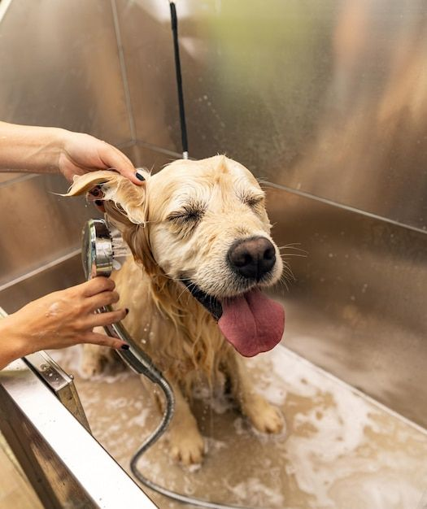
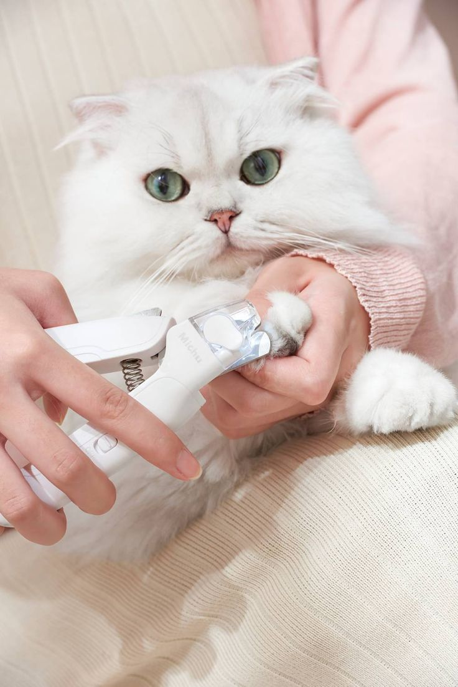
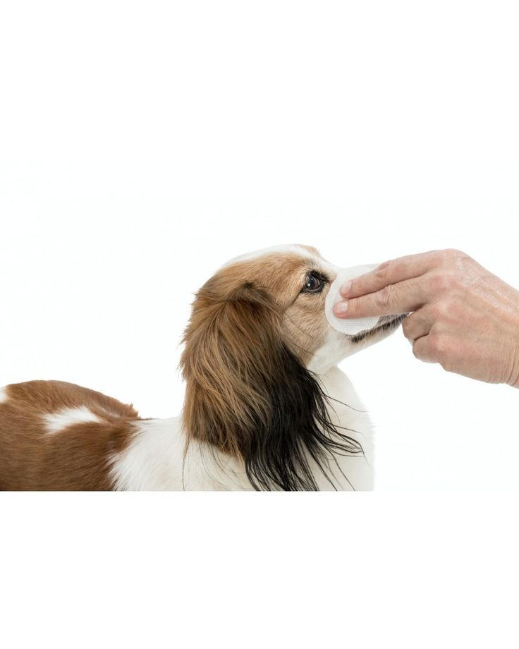

Este servicio se enfoca en realizar cortes específicos según los estándares de cada raza de mascota, asegurando que su apariencia respete las características distintivas y funcionales propias, como el corte del caniche o el schnauzer. Es ideal para mantener a la mascota en línea con su estilo tradicional.
Baños con productos hipoalergénicos

Baños con productos hipoalergénicos: Este servicio garantiza una limpieza profunda y segura para tu mascota, utilizando productos diseñados especialmente para pieles sensibles. Es ideal para prevenir irritaciones, alergias y mantener el pelaje suave, brillante y saludable.
Cuidado y recorte de uñas.

Cuidado y recorte de uñas: Este servicio se encarga de mantener las uñas de tu mascota a una longitud adecuada, evitando molestias al caminar, posibles heridas o daños en muebles. Se realiza con herramientas especiales para garantizar seguridad y comodidad durante el proceso.
Limpieza de oídos y ojos.

Limpieza de oídos y ojos: Este servicio ayuda a mantener la salud e higiene de tu mascota, eliminando acumulación de suciedad, cerumen o lagrimeo excesivo. Es esencial para prevenir infecciones, molestias y asegurar que tu mascota esté cómoda y saludable.